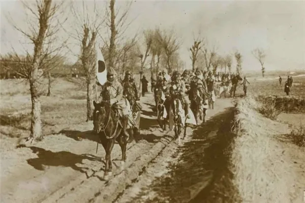
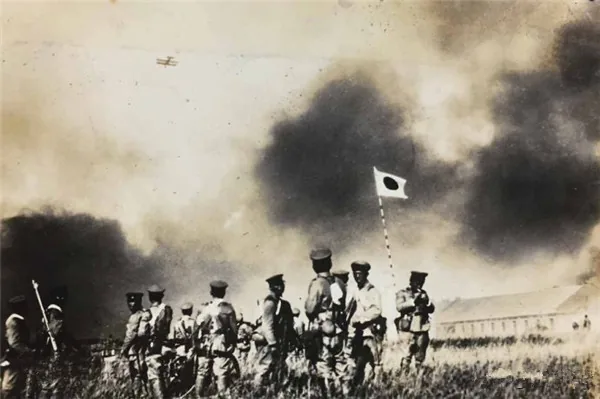
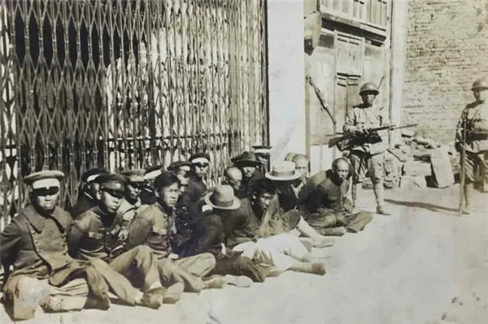

九一八事变
1931 年 9 月 18 日夜 22 时 20 分许，日军炸毁沈阳北郊柳条湖附近南满铁路的一段路轨，反诬中国军队所为， 随后炮轰东北军驻地北大营，发动了震惊中外的九一八事变，开启蓄谋已久的侵华战争。 由于国民政府的不抵抗政策，沈阳城次日即告陷落，4 个月零 18 天后东北全境沦陷。 但命令之下仍有军人开枪——宽城子、南岭、江桥，十四年抗战由此开始。

01 · 背景起因 Background
蓄谋已久。九一八事变不是偶发冲突。关东军主要策划者石原莞尔与板垣征四郎 早在 1929 年前后就已形成"解决满蒙问题"的完整方案，并多次实地侦察、推演作战计划。所谓"中国军队炸毁铁路"，不过是为动手找的借口。
不抵抗政策。事变发生后，国民政府推行"不抵抗"与"攘外必先安内"政策，对日本的武装进攻不作有效抵抗。
02 · 事件经过 Course of Events
03 · 主要人物 Figures
东北军统帅。事变当夜执行"不抵抗"方针，日军一夜之间占领沈阳，4 个月零 18 天后东北全境沦陷。
1931 年 11 月率部在嫩江江桥抗击日军，日军伤亡 382 人，是事变以来中国军队第一次有组织的大规模抵抗。
东北抗日联军主要领导人。牺牲时胃里只有枯草、树皮和棉絮，年 35 岁。
本庄繁、板垣征四郎、石原莞尔、土肥原贤二等，是发动九一八事变的主要策划与执行者。
04 · 历史图片与史料 Archive


05 · 事件关键知识梳理 Essentials
关键信息 Key Facts
关键名词 Glossary
| 名词 | 解释 |
|---|---|
| 柳条湖事件 | 1931 年 9 月 18 日夜，日军自行炸毁沈阳北郊柳条湖附近南满铁路的一段路轨，反诬中国军队所为，以此作为发动侵略的借口。 |
| 关东军 | 日本驻扎在中国东北的侵略军。九一八事变由其自行策划发动，本庄繁、板垣征四郎、石原莞尔等是主要策划与执行者。 |
| 北大营 | 东北军在沈阳的驻地。九一八事变当夜被日军炮轰，是日军武装侵占东北的直接目标之一。 |
| 不抵抗政策 | 九一八事变前后国民政府推行的政策，对日本的武装侵略不作有效抵抗，推行"攘外必先安内"，直接导致东北迅速沦陷。 |
| 攘外必先安内 | 国民政府提出的政策方针，主张先"安内"再"攘外"，实际上把主要力量用于对内，客观上纵容了日本的侵略扩张。 |
| 东北抗日联军 | 简称"东北抗联"，中国共产党在东北组建并领导的抗日武装。其前身是九一八事变后东北民众自发组织的东北义勇军，一度发展至数十万人，为沦陷初期抵抗的主体；中共在义勇军受挫基础上组建抗联，在白山黑水间坚持抗日游击战争 14 年。 |
06 · 意义与价值 Significance
九一八事变是日本大规模侵华的开端，也是中国人民抗日战争和世界反法西斯战争的东方起点。
点燃了中华民族 14 年抗战的烽火。发生地辽宁，历史性地成为中国十四年抗日战争的起始地。
揭开了世界反法西斯战争的序幕，中国成为世界反法西斯战争的东方主战场。
白山黑水间的中华儿女奋起抗争，孕育出英勇不屈的东北抗联精神，成为抗战的重要精神旗帜。